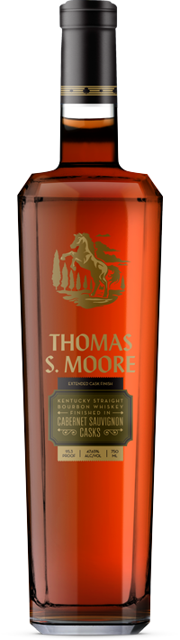
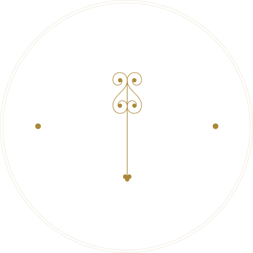
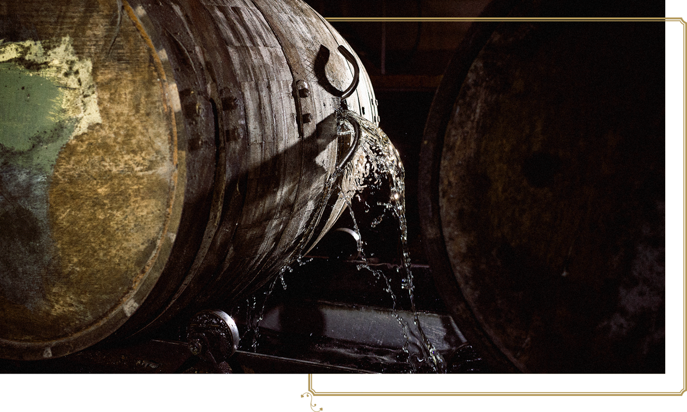
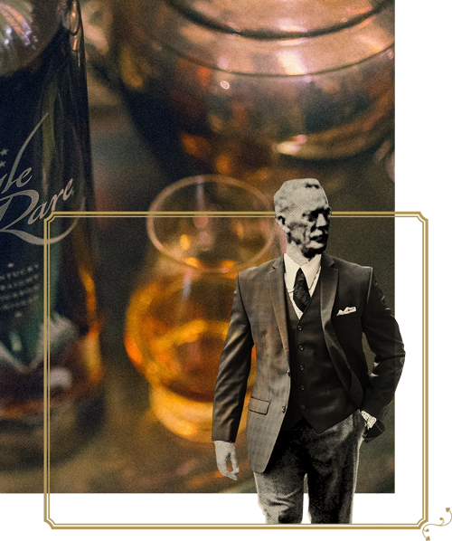
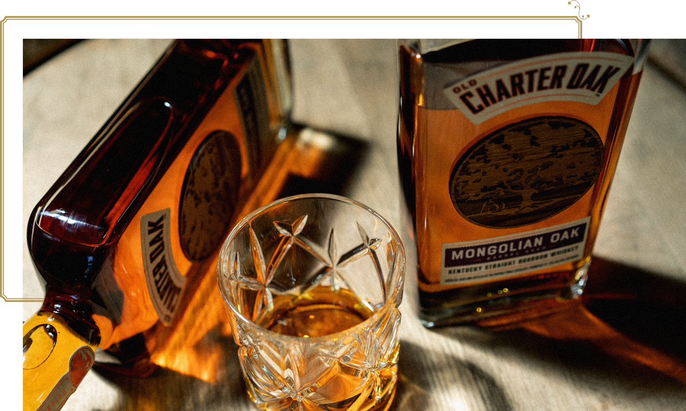
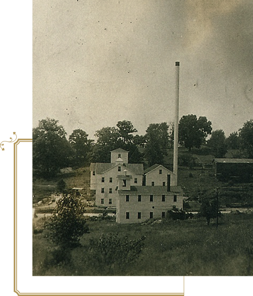
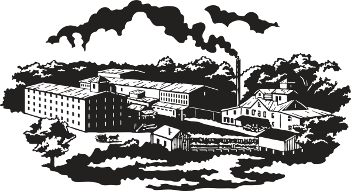

Kentucky Straight Bourbon Whiskey Finished in Chardonnay Casks
97.9 PROOF / 48.95% ALC/VOL / 750 ML
View Expression Details#1 of 3



The Legend of
Thomas S. Moore
Born in 1853 from the son of an architect and master craftsman, Thomas S. Moore surmounted countless challenges in building his bourbon empire. Moore began making whiskey at what would become Barton 1792 Distillery in Bardstown, Kentucky in 1889.
His distillery flourished, and Bardstown is now the Bourbon Capital of the World. Much like the Belle of Nelson—Moore’s original bourbon brand, which paid tribute to the rearing racehorse of the same name—Moore’s legacy lives on today through his namesake brand of premium bourbon.

In a Class of It's Own
Made at the very same distillery where Thomas S. Moore worked during the nineteenth century, using mineral-rich water from the Tom Moore spring, this cask-finished bourbon honors Moore’s relentless ambition and his commitment to crafting bourbon whiskey that stands the test of time.

What Is An
Extended Cask Finish?
This premium bourbon was emptied from its oak barrels after many years of aging, then finished in casks that previously aged other spirits for two to three more years—not three to six months, like other cask-finished bourbons. Because of this extended cask finish, these expressions offer an unmatched experience for the most refined whiskey palates.
